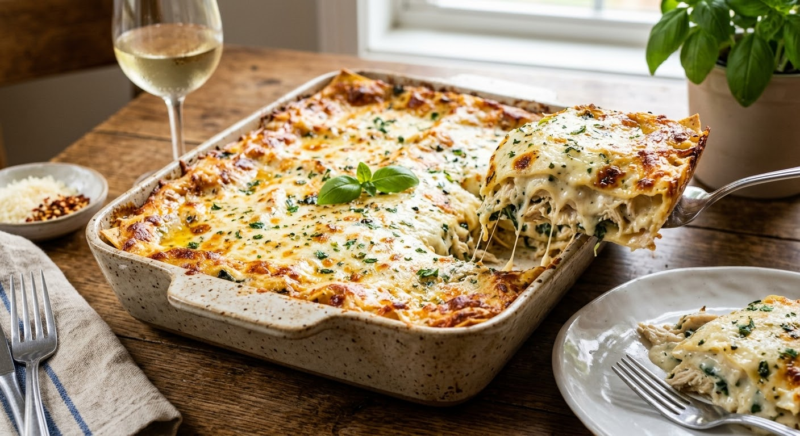

Home
Lasagna

This easy lasagna features jarred spaghetti sauce for easy layering and
rich tomato flavor.
This Lasagna recibe will have your mouth bubbling everytime you think of
it
It is by far one of the best lasagna recipes out there
Ingridients
- 6 uncooked lasagna noodles
- 3 skinless, boneless chicken breast halves
- 2 cups shredded mozzarella cheese, divided
- 1 (8 ounce) package cream cheese, softened
- ¼ cup hot water
- 1 cube chicken bouillon
Cooking Steps
Gather all ingredients. Preheat the oven to 350 degrees F (175 degrees
C)
Bring a large pot of lightly salted water to a boil. Cook lasagna
noodles in boiling water, stirring occasionally, until tender yet firm
to the bite, about 8 minutes. Drain, rinse with cold water, and set
aside.
Meanwhile, place chicken in a large saucepan with enough water to
cover; bring to a boil. Cook until chicken is no longer pink and the
juices run clear, about 20 minutes. Remove chicken from the saucepan and
shred
Combine shredded chicken, 1 cup mozzarella cheese, and cream cheese in
a large bowl. Dissolve hot water and bouillon in a liquid measure; pour
over chicken mixture and stir until well combined
Spread 1/3 of the spaghetti sauce in the bottom of a 9x13-inch baking
dish. Cover with 1/2 of the chicken mixture and top with 3 lasagna
noodles; repeat. Top with remaining sauce and sprinkle with remaining 1
cup mozzarella cheese.
Bake in the preheated oven for 45 minutes
Serve and enjoy!